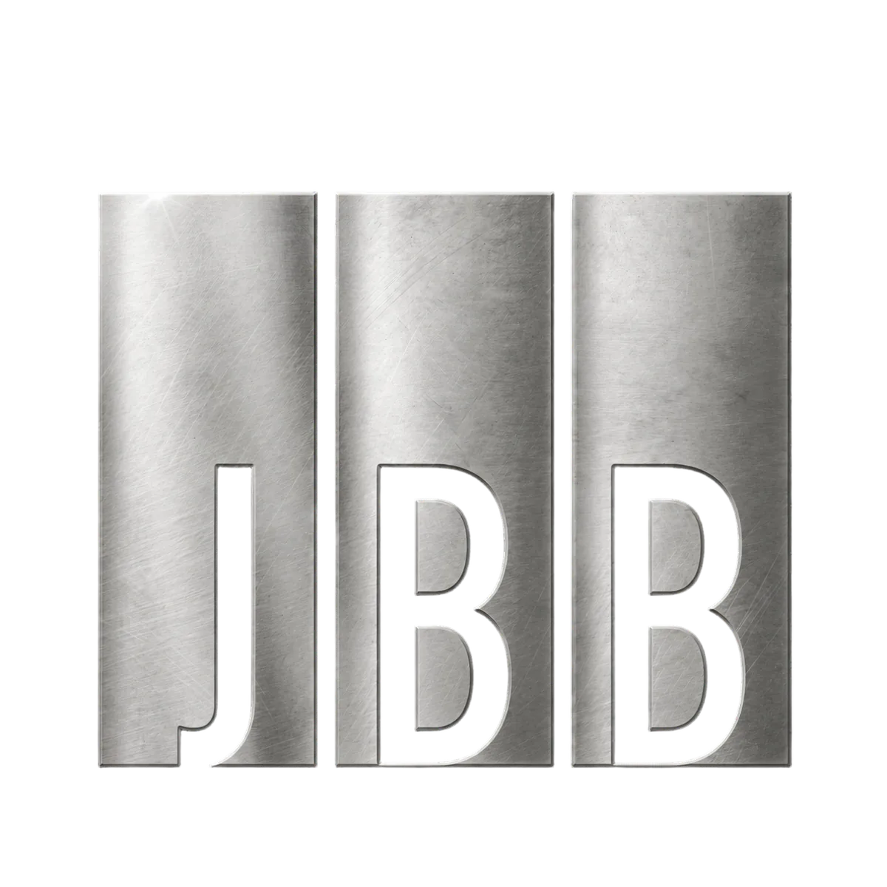

🐔
喂鸡百科
自由的鸡百科
💿
🌙 深色
💬 讨论
📋 反馈
📝 日志
导航
🐔 首页
📖 关于
🔭 愿景
条目
👥 团队成员
🎬 代表作品
📍 公司位置
🤝 赞助商
语言
🇨🇳 简体中文
🇹🇼 繁體中文
🇺🇸 English
🇯🇵 日本語
🇩🇪 Deutsch
🇫🇷 Français
🇷🇺 Русский
工具
🔆 切换外观
✉️ 联系我们
🐔 首页
›
条目
›
喂鸡百科
喂鸡百科
喂鸡百科

总部
成立
2020
官网
jbbfilm.xyz
1
2
3
4
5
6
7
8
[编辑]
[编辑]
[编辑]
[编辑]
[编辑]
[编辑]
[编辑]
📋 意见反馈
[编辑]
欢迎提出新功能建议或 Bug 反馈，选择类型后填写即可。
查看所有反馈 →
🆕 功能
🐛 Bug
🎨 体验
💬 其他
提交反馈
[编辑]
喂鸡百科 官方网站
—
https://jbbfilm.xyz
喂鸡百科 GitHub
—
rawetrip/rawetrip.github.io
✕
⏳ 加载中...